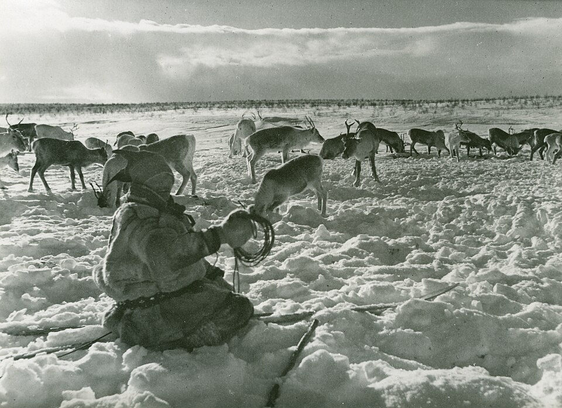
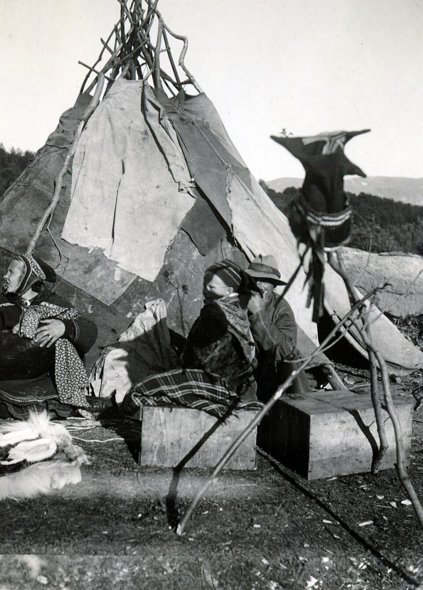
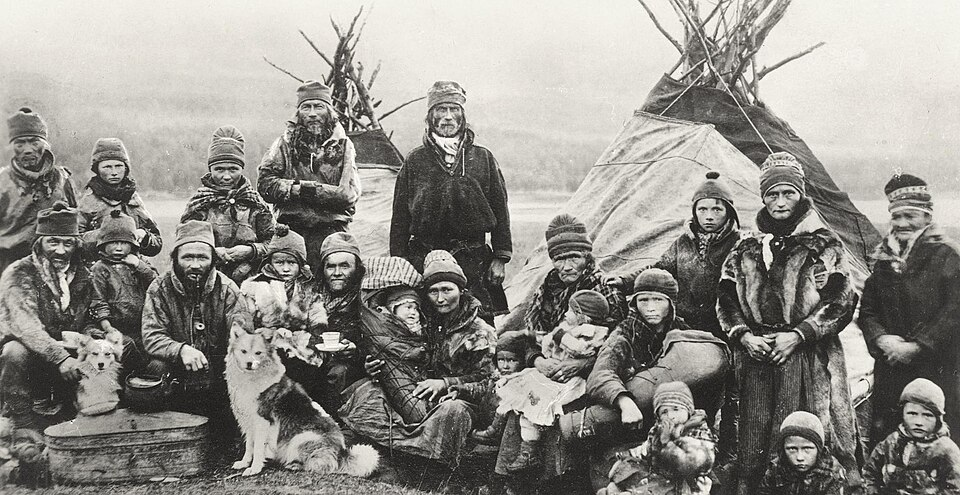
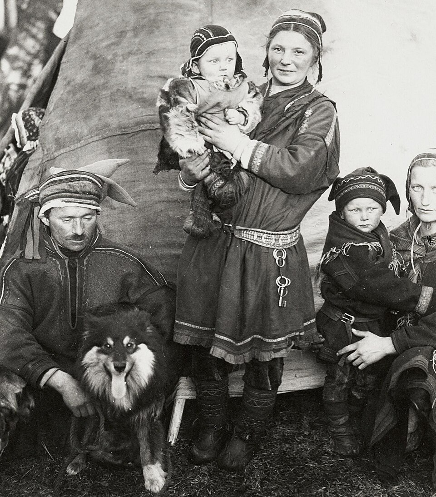
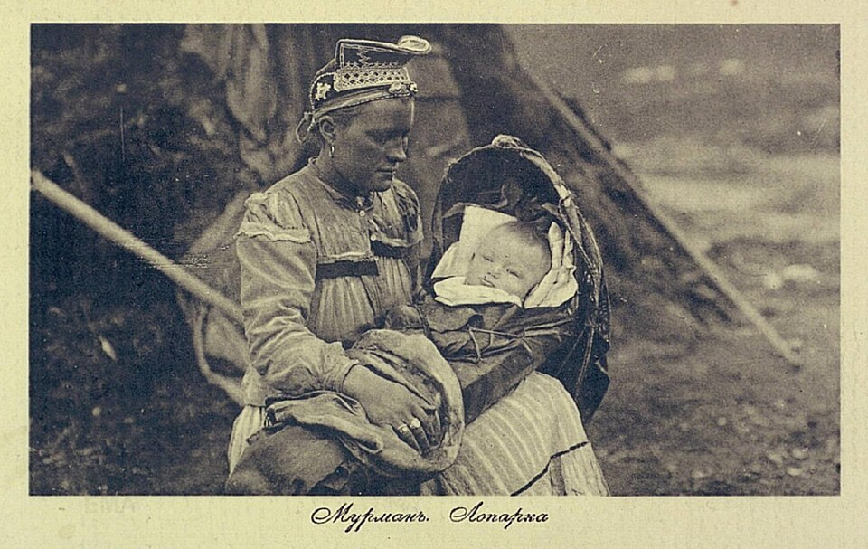
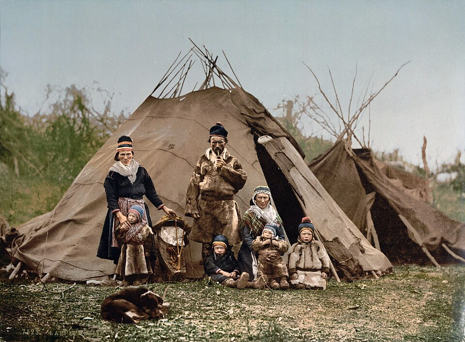

Where the tundra freezes meters deep, the Sami build the lavvu—a conical dwelling externally similar to a chum, but with unique aerodynamics. Unlike forest chums, the lavvu is lower and wider at the base. This allows it to stand firm when polar winds reach hurricane speeds. The frame consists of three or four forked poles that interlock at the top, forming a rigid lock. Reindeer hides were stretched over it, fur facing inward.
A hearth called an "aran" always burns in the center of the lavvu. Smoke escapes through an opening at the top, while cold air entering from below creates a draft that prevents smoke from accumulating near the ground where people sit. Inside the Sami chum (lavvu), every centimeter was strictly allocated. It was not just a tent; it was a model of the cosmos. Boassu: A sacred place in the back of the chum, opposite the entrance. Magical drums and sacred objects were kept there. Women were forbidden to step into this zone—it was believed this could anger the protective spirits of the home. Crossing the threshold of the lavvu, a Sami would clear the snow from their shoes not only for cleanliness but to "leave the cold outside the door." Life inside the circle was sacred.


The Sami are the official inventors of skis. For them, skis were not entertainment; they were the only way to move during a hunt. Ancient Sami skis were often of different lengths: one short (the kicking ski), lined with reindeer fur for grip, and the second long (the gliding ski). In ancient Scandinavian chronicles, the Sami were called "Skritfinns"—the "sliding Finns." The Vikings feared them, considering them great sorcerers who could run across water (frozen marshes) faster than a horse could gallop.
The Sami were the first to think of using a reindeer as a "tow." The skier would hold onto a belt tied to the reindeer and fly across the tundra at the speed of the wind. This required incredible balance and leg strength. The Sami invented the kereža—a sled shaped like a boat with a cut-off stern. Regular sleds on runners simply bog down in the deep, loose snow of the tundra. The kereža, thanks to its aerodynamic shape, "floats" on the snow. It has only one wide runner in the middle, making it incredibly maneuverable. Unlike Siberian tribes, the Sami often harnessed only one reindeer to the kereža. This allowed the skier-driver to control the animal with a single rein, leaving the other hand free for a hunting knife or spear.
Long before the appearance of sunglasses, the Sami made slits in pieces of bone or wood. This protected them from "snow blindness"—when the bright spring sun, reflecting off the snow, literally burns the retina of the eye. Sami clothing—the gakti and pesk—is the pinnacle of Arctic equipment evolution. Reindeer hide has a unique structure: each hair is hollow inside (filled with air). This creates double thermal insulation. Footwear (Nuvegi): Sewn from the skin of a reindeer's head, where the fur is shortest and strongest. Dried sedge (grass) was placed inside instead of socks to absorb moisture and prevent the feet from freezing. If the grass got wet, it was simply thrown away and replaced with new, dry, and warm grass.


There are no vegetables in the tundra, but the Sami did not suffer from vitamin deficiency. The secret lay in the proper use of the reindeer. Reindeer blood was collected and frozen. In winter, it was added to stews—it was the main source of vitamins and iron. Meat was cured in the cold wind until it was as hard as stone. It did not spoil for years and weighed little, making it ideal for long migrations. Cloudberries and lingonberries—the only delicacies—were gathered by the Sami in the autumn and stored in barrels, covered with reindeer fat for preservation.
When the meat ran out, the Sami used "bread from trees." They removed the inner layer of pine bark (cambium), dried it, and ground it into flour. This was a powerful concentrate of Vitamin C that saved them from scurvy. The bark was eaten not out of hunger, but as medicine, to keep gums strong and bones sturdy. The Sami never threw away bones. They crushed and boiled them to extract the fatty bone marrow. This is the most calorie-dense product in the Arctic. They also boiled reindeer hooves, producing a thick, sticky broth that healed joints and helped restore strength after 50-kilometer treks. Due to its incredible fattiness, Sami women used reindeer milk as a protective face cream. It does not freeze on the skin and creates a film that saves it from windburn.
The Sami believed the entire tundra was inhabited by spirits. The center of their religion was the sieidi—massive sacred stones, often standing on "legs" of smaller stones. Reindeer antlers and fat were offered to the sieidi so the hunt would be successful. It was believed that if the spirit of the stone was offended, it would send a blizzard to bury the entire herd. During the aurora, it was forbidden to whistle or shout loudly, lest the spirits descend and take your soul with them into the sky. For the Sami, this is not a beautiful phenomenon, but "guovssahas"—the souls of ancestors.


The Sami have over 400 words for reindeer depending on age, sex, coat color, and even character. This was their main "database." Each owner had their own complex system of notches on the reindeer's ears. Stealing a reindeer was considered the gravest crime, for which one could be banished from the community forever. Joik—the voice of the soul: This is not a song, but a way to "describe" a person or animal through sound. The Sami do not sing about someone; they sing someone. A joik of a reindeer sounds like the thumping of hooves, while a joik of a mountain sounds like the howling of the wind.
In the tundra, where there isn't a single tree or bush for hundreds of kilometers, the Sami oriented themselves by sastrugi—frozen snow waves created by the wind. The Sami knew which way the prevailing northern wind blew. By the direction of these snow ridges, they could find their way back to camp even in a "whiteout," when the sky merges with the earth. The North Star was called "Boahi-nasti" by the Sami—the "Pillar supporting the sky." They believed that if this star fell, the world would collapse. They plotted their routes by it during the three months of total darkness.
Every man and woman wore a Leuku on their belt—a massive knife with a wide blade. The handle was made of birch burl or reindeer antler. Why not metal? At -40°C, touching metal with a bare hand causes instant frostbite. Antler and wood do not chill the hand. With this knife, a Sami did everything: butchered carcasses, chopped dwarf birches for firewood, carved skis, and even ate. Without a knife, a Sami in the tundra was considered a dead man.
The main myth of the Sami is the story of Myandash, a man who could turn into a golden reindeer. Myandash taught the Sami to hunt without exterminating the entire herd. He bequeathed: "Take only what you need for life today." The Sami believe they are direct descendants of this shapeshifter. Therefore, killing an extra reindeer is, for them, the same as committing the murder of a relative. This ecological thinking allowed them to live in the tundra for thousands of years without breaking the balance.
Sami children had no childhood in our sense. Life in the tundra was a constant exam, where the price of a mistake was the life of the entire family. Infants were kept in "givtki" cradles covered in reindeer skin. Dried moss and reindeer fur were used instead of diapers. A child spent almost the entire day in the frosty air. This created an immunity that any modern athlete would envy. A boy's first toy was a real knife; a girl's was a bone needle. By age 7–8, a child had to be able to independently start a fire in a storm wind, clean fish, and distinguish wolf droppings from fox droppings. The Sami taught their children the main thing—silence. In the tundra, extra noise can scare off a beast or attract trouble. A child who could sit motionless in an ambush for hours with their father was considered ready for adult life.
The most important moment in a teenager's life was receiving their own brand. When a youth first caught a reindeer independently with a lasso (arkaan), they were allowed to carve their mark on the animal's ears. From that day, they ceased to be a child and became the owner of part of the herd. For a girl, initiation was making her first pair of shoes or clothes—if the seams did not let in water or cold, she was considered ready for marriage and managing the household in the lavvu.
In the Arctic, leaving a person outside means killing them. Therefore, the Sami had an unwritten law: any traveler entering a lavvu must be fed and warmed, even if they were an enemy. The host never asked "who are you?" or "where are you going?" until the guest had finished their meal. This was the highest form of trust and respect for human life. Elders in the community were living libraries. In conditions where there was no writing, all information about pastures, medicinal herbs, and animal habits was stored in their heads. The elder's word was law. To insult an old person meant incurring the wrath of the spirits, after which the entire community would turn away from you.
The Sami believed the tundra gave resources on loan. It was forbidden to catch all the fish from a lake or kill more reindeer than needed for winter food. There was a belief: if you take too much from nature, it will take the most precious thing from you—the health of your children or luck in your migration. The Sami world today is a quiet whisper against the roar of civilization. Despite borders dividing their ancestral lands among four countries, the Sami spirit remains undivided. They are among the few who have proven: one can live in the very heart of an icy hell and call it home. The story of the Sami is a hymn to minimalism and resilience. They learned to value the warmth of a fire, the taste of clean water, and the silence of the polar night more than material goods. In an era where we lose touch with reality in digital worlds, the Sami remind us of the main thing: a human is great not because they conquered nature, but because they managed to become a part of it without breaking the fragile balance. As long as the North Star shines in the north, which the Sami call the pillar of the sky, their ski tracks will not be overgrown. They remain the guardians of the Arctic—people whose hearts beat in unison with the icy breath of the Earth.